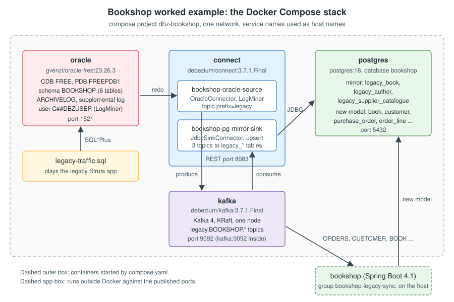

Worked Example: Bookshop from Oracle to PostgreSQL
|
This content was generated with the assistance of AI and should be verified against the official documentation before being relied on in production. |
This page puts the whole section together. It builds the Bookshop migration pipeline on one machine, from an empty
directory to rows that change in Oracle and appear in PostgreSQL a second later. The legacy side is the BOOKSHOP
schema of the old Java EE/Struts application, in an Oracle pluggable database. The new side is the PostgreSQL 18
database of the Spring Boot bookshop application. In between are Kafka, a Debezium Oracle source connector and a
Debezium JDBC sink connector, all started with one Docker Compose file. Every file is shown in full, so you can copy
the directory layout below and run the same steps.
The example follows the order of a real migration, as described in Migration Patterns with CDC:
-
prepare the legacy database for change data capture (archive log mode, supplemental logging, a LogMiner user);
-
register the source connector and let it take the initial snapshot;
-
copy the tables that keep their shape (
BOOK,AUTHOR,SUPPLIER_CATALOGUE) into mirror tables with the JDBC sink; -
let the new application translate the tables that change shape (
CUSTOMER,ORDERS,ORDER_LINE) through its anti-corruption layer; -
generate legacy traffic and watch it arrive;
-
verify that both sides match, and repair a table with an incremental snapshot.
The cut-over itself, and reverse replication back to Oracle, continue in Cut-over & Reverse Replication. The architectural background (strangler fig, anti-corruption layer, why CDC rather than dual writes) is on Migration Path: From a Legacy Stack to a Modern One.
Checked on 2026-11-09 against Debezium 3.7.1.Final, with gvenzl/oracle-free:23.26.3 (the server reports itself as
"Oracle AI Database 26ai Free Release 23.26.3.0.0", the successor of Oracle Database 23ai Free in the same 23.x
release line), quay.io/debezium/kafka:3.7.1.Final and quay.io/debezium/connect:3.7.1.Final (Apache Kafka 4.3.1,
KRaft mode) and postgres:18. Everything on this page except the Spring Boot application was run with Docker
(Docker Engine 29, Linux arm64 containers, 8 GB of memory for Docker) on 2026-11-09: the compose stack, the Oracle
initialisation scripts, both connectors, the initial snapshot, the traffic script, an incremental snapshot signal and
the verification queries. The outputs shown are from that run, trimmed. The published connector configuration differs
from the one that ran in one property: the run used schema.history.internal.store.only.captured.tables.ddl=true,
while the configuration on this page uses the default false, because the cut-over and a rollback depend on the full
DDL history (see the connector settings table below). The Spring Boot application was not run here;
its code and its own test run are on
Listening to Events in Applications.
What you build

Four containers run in one Compose project called dbz-bookshop. They reach each other by service name (oracle,
kafka, connect, postgres) on the project network, and publish their standard ports to the host:
| Service | Image | Host port | Role |
|---|---|---|---|
|
|
1521 |
The legacy database: CDB |
|
|
9092 |
One Kafka 4 node in KRaft mode (broker and controller in one process) |
|
|
8083 |
Kafka Connect with every Debezium connector, including the Oracle source and the JDBC sink |
|
|
5432 |
The new |
The Spring Boot bookshop application runs outside Docker, against the published ports, as it does on a developer
machine.
The whole flow, from a legacy write to the two kinds of target table, looks like this:
Prerequisites
-
Docker with Docker Compose v2. Give Docker at least 6 GB of memory; 8 GB is comfortable. Oracle Free alone used about 1.5 GB in the run, Kafka about 450 MB and Kafka Connect up to its heap limit.
-
About 6 GB of free disk for the images. The Oracle image is 2.3 GB.
-
curland, for the application part, Java 21 and Maven. -
Free host ports 1521, 9092, 8083 and 5432. If one of them is taken, see Pitfalls found while running it.
No Oracle client is needed on the host: every SQL command runs with SQL*Plus inside the oracle container.
The quay.io/debezium/connect:3.7.1.Final image already contains the Oracle connector and the Oracle JDBC driver.
The run listed /kafka/connect/debezium-connector-oracle/ojdbc11-23.26.1.0.0.jar (and the same jar in the JDBC sink
directory), so no custom image is needed for LogMiner. The image README and the
Oracle connector deployment section
still tell you to add the driver from the Oracle Instant Client. That is only needed for the XStream adapter, which
also needs xstreams.jar and the native libraries, or if you build your own Connect image from the connector archive.
Check it on your image with:
docker run --rm --entrypoint ls quay.io/debezium/connect:3.7.1.Final /kafka/connect/debezium-connector-oracle | grep ojdbcReference: Debezium — Deploying the Oracle connector
The project layout
Create this directory tree. Each file is listed in full in the next sections.
dbz-bookshop/
├── compose.yaml
├── oracle/
│ ├── init/
│ │ ├── 01-enable-logminer.sh # archive log mode, supplemental logging, C##DBZUSER
│ │ └── 02-bookshop-schema.sql # BOOKSHOP schema, seed data, signal table
│ └── scripts/
│ └── legacy-traffic.sql # simulated legacy application traffic
├── postgres/
│ └── init/
│ └── 01-bookshop.sql # mirror tables, new model, processed_change
└── connectors/
├── bookshop-oracle-source.json
└── bookshop-pg-mirror-sink.jsonReference: debezium-examples — tutorial
Make the shell script executable (chmod +x oracle/init/01-enable-logminer.sh). The Oracle image runs the files in
/container-entrypoint-initdb.d in name order, once, the first time the container starts with an empty data volume.
The PostgreSQL image does the same with /docker-entrypoint-initdb.d.
The Compose file
name: dbz-bookshop
services:
oracle:
image: gvenzl/oracle-free:23.26.3
environment:
ORACLE_PASSWORD: top_secret
ports:
- "${ORACLE_HOST_PORT:-1521}:1521"
volumes:
- ./oracle/init:/container-entrypoint-initdb.d:ro
- ./oracle/scripts:/scripts:ro
- oracle-data:/opt/oracle/oradata
healthcheck:
test: ["CMD", "healthcheck.sh"]
interval: 15s
timeout: 10s
retries: 60
start_period: 60s
kafka:
image: quay.io/debezium/kafka:3.7.1.Final
environment:
CLUSTER_ID: 5Yr1SIgYQz-b-dgRabWx4g
NODE_ID: "1"
NODE_ROLE: combined
KAFKA_CONTROLLER_QUORUM_BOOTSTRAP_SERVERS: kafka:9093
KAFKA_LISTENERS: PLAINTEXT://0.0.0.0:9092,CONTROLLER://0.0.0.0:9093,EXTERNAL://0.0.0.0:9094
KAFKA_ADVERTISED_LISTENERS: PLAINTEXT://kafka:9092,CONTROLLER://kafka:9093,EXTERNAL://localhost:${KAFKA_HOST_PORT:-9092}
KAFKA_LISTENER_SECURITY_PROTOCOL_MAP: CONTROLLER:PLAINTEXT,PLAINTEXT:PLAINTEXT,EXTERNAL:PLAINTEXT
ports:
- "${KAFKA_HOST_PORT:-9092}:9094"
volumes:
- kafka-data:/kafka/data
healthcheck:
test: ["CMD-SHELL", "/kafka/bin/kafka-topics.sh --bootstrap-server kafka:9092 --list >/dev/null 2>&1"]
interval: 10s
timeout: 20s
retries: 30
connect:
image: quay.io/debezium/connect:3.7.1.Final
depends_on:
kafka:
condition: service_healthy
environment:
BOOTSTRAP_SERVERS: kafka:9092
GROUP_ID: bookshop-connect
CONFIG_STORAGE_TOPIC: bookshop_connect_configs
OFFSET_STORAGE_TOPIC: bookshop_connect_offsets
STATUS_STORAGE_TOPIC: bookshop_connect_statuses
CONFIG_STORAGE_REPLICATION_FACTOR: "1"
OFFSET_STORAGE_REPLICATION_FACTOR: "1"
STATUS_STORAGE_REPLICATION_FACTOR: "1"
HEAP_OPTS: "-Xms256M -Xmx768M"
ports:
- "${CONNECT_HOST_PORT:-8083}:8083"
healthcheck:
test: ["CMD-SHELL", "curl -fs http://localhost:8083/connector-plugins >/dev/null"]
interval: 10s
timeout: 5s
retries: 30
postgres:
image: postgres:18
environment:
POSTGRES_DB: bookshop
POSTGRES_USER: bookshop
POSTGRES_PASSWORD: bookshop
ports:
- "${POSTGRES_HOST_PORT:-5432}:5432"
volumes:
- ./postgres/init:/docker-entrypoint-initdb.d:ro
- postgres-data:/var/lib/postgresql
healthcheck:
test: ["CMD-SHELL", "pg_isready -U bookshop -d bookshop"]
interval: 5s
timeout: 5s
retries: 20
volumes:
oracle-data:
kafka-data:
postgres-data:Reference: Debezium — Installing Debezium
What each part does:
-
name: dbz-bookshopfixes the project name, so container, network and volume names are predictable (dbz-bookshop-oracle-1,dbz-bookshop_oracle-data) anddocker compose down -vremoves exactly this stack. -
Host ports are variables with the standard ports as defaults (
${KAFKA_HOST_PORT:-9092}). Without a.envfile you get 1521, 9092, 8083 and 5432. When those ports are busy, put other values in a.envfile next tocompose.yaml; nothing else changes (see Pitfalls found while running it). -
Oracle.
ORACLE_PASSWORDsets theSYSandSYSTEMpasswords. The two init directories are mounted read-only:initis executed once,scriptsholds the traffic script for later.healthcheck.shis shipped in the image and reports healthy only when the database is open, which takes a few minutes on the first start because the init scripts restart the database. -
Kafka runs one KRaft node with three listeners:
PLAINTEXTon 9092 for the other containers (advertised askafka:9092),CONTROLLERon 9093 for the KRaft quorum, andEXTERNALon 9094, published on the host as 9092 and advertised aslocalhost:9092for the Spring Boot application. The image’s entrypoint turns everyKAFKA_*variable into aserver.propertiesentry and formats the storage withCLUSTER_IDon the first start.controller.quorum.bootstrap.serversreplaces the oldercontroller.quorum.voters, which the image converts with a deprecation warning. -
Connect waits until Kafka answers.
GROUP_IDand the three storage topics identify this Connect cluster; their replication factor is 1 because there is only one broker.HEAP_OPTScaps the JVM heap (see the pitfalls). The worker keeps the image’s default converters:JsonConverterwith schemas embedded in every message. -
PostgreSQL 18 stores its data under
/var/lib/postgresql. From version 18 the official image putsPGDATAin a version-specific directory below that path, so the volume is mounted on the parent directory.
Step 1: prepare Oracle
Archive log mode, supplemental logging and the connector user
LogMiner reads committed changes from the redo logs, so the database must archive them (ARCHIVELOG mode) and must
write enough column data into them (supplemental logging). The connector connects as a common user, C##DBZUSER,
that exists in the root container and in every PDB. The grants are those of the official LogMiner user example; the
Oracle Connector page explains each one, and how to reduce
SELECT ANY TABLE and FLASHBACK ANY TABLE to the captured tables.
#!/bin/bash
# Runs once, on the first start of the container, as the oracle OS user.
# 1. Archive log mode (needs a restart to MOUNT state).
# 2. Minimal supplemental logging at database level.
# 3. LogMiner tablespace + common user C##DBZUSER with the grants from the Debezium docs.
set -euo pipefail
mkdir -p /opt/oracle/oradata/recovery_area
sqlplus -s / as sysdba <<'EOF'
WHENEVER SQLERROR EXIT SQL.SQLCODE
ALTER SYSTEM SET db_recovery_file_dest_size = 10G;
ALTER SYSTEM SET db_recovery_file_dest = '/opt/oracle/oradata/recovery_area' SCOPE=SPFILE;
SHUTDOWN IMMEDIATE
STARTUP MOUNT
ALTER DATABASE ARCHIVELOG;
ALTER DATABASE OPEN;
ALTER PLUGGABLE DATABASE ALL OPEN;
ALTER DATABASE ADD SUPPLEMENTAL LOG DATA;
ARCHIVE LOG LIST
EOF
sqlplus -s / as sysdba <<'EOF'
WHENEVER SQLERROR EXIT SQL.SQLCODE
CREATE TABLESPACE logminer_tbs DATAFILE '/opt/oracle/oradata/FREE/logminer_tbs.dbf'
SIZE 25M REUSE AUTOEXTEND ON MAXSIZE UNLIMITED;
ALTER SESSION SET CONTAINER = FREEPDB1;
CREATE TABLESPACE logminer_tbs DATAFILE '/opt/oracle/oradata/FREE/FREEPDB1/logminer_tbs.dbf'
SIZE 25M REUSE AUTOEXTEND ON MAXSIZE UNLIMITED;
ALTER SESSION SET CONTAINER = CDB$ROOT;
CREATE USER c##dbzuser IDENTIFIED BY dbz
DEFAULT TABLESPACE logminer_tbs
QUOTA UNLIMITED ON logminer_tbs
CONTAINER=ALL;
GRANT CREATE SESSION TO c##dbzuser CONTAINER=ALL;
GRANT SET CONTAINER TO c##dbzuser CONTAINER=ALL;
GRANT SELECT ON V_$DATABASE TO c##dbzuser CONTAINER=ALL;
GRANT FLASHBACK ANY TABLE TO c##dbzuser CONTAINER=ALL;
GRANT SELECT ANY TABLE TO c##dbzuser CONTAINER=ALL;
GRANT SELECT_CATALOG_ROLE TO c##dbzuser CONTAINER=ALL;
GRANT EXECUTE_CATALOG_ROLE TO c##dbzuser CONTAINER=ALL;
GRANT SELECT ANY TRANSACTION TO c##dbzuser CONTAINER=ALL;
GRANT LOGMINING TO c##dbzuser CONTAINER=ALL;
GRANT CREATE TABLE TO c##dbzuser CONTAINER=ALL;
GRANT LOCK ANY TABLE TO c##dbzuser CONTAINER=ALL;
GRANT CREATE SEQUENCE TO c##dbzuser CONTAINER=ALL;
GRANT EXECUTE ON DBMS_LOGMNR TO c##dbzuser CONTAINER=ALL;
GRANT EXECUTE ON DBMS_LOGMNR_D TO c##dbzuser CONTAINER=ALL;
GRANT SELECT ON V_$LOG TO c##dbzuser CONTAINER=ALL;
GRANT SELECT ON V_$LOG_HISTORY TO c##dbzuser CONTAINER=ALL;
GRANT SELECT ON V_$LOGMNR_LOGS TO c##dbzuser CONTAINER=ALL;
GRANT SELECT ON V_$LOGMNR_CONTENTS TO c##dbzuser CONTAINER=ALL;
GRANT SELECT ON V_$LOGMNR_PARAMETERS TO c##dbzuser CONTAINER=ALL;
GRANT SELECT ON V_$LOGFILE TO c##dbzuser CONTAINER=ALL;
GRANT SELECT ON V_$ARCHIVED_LOG TO c##dbzuser CONTAINER=ALL;
GRANT SELECT ON V_$ARCHIVE_DEST_STATUS TO c##dbzuser CONTAINER=ALL;
GRANT SELECT ON V_$TRANSACTION TO c##dbzuser CONTAINER=ALL;
GRANT SELECT ON V_$MYSTAT TO c##dbzuser CONTAINER=ALL;
GRANT SELECT ON V_$STATNAME TO c##dbzuser CONTAINER=ALL;
EXIT
EOFThe script runs as the oracle operating-system user, so sqlplus / as sysdba works without a password.
SHUTDOWN IMMEDIATE followed by STARTUP MOUNT is the only way to switch on archive log mode; the
ALTER PLUGGABLE DATABASE ALL OPEN line makes sure FREEPDB1 is open again before the next script runs. The data
file paths (/opt/oracle/oradata/FREE/... and /opt/oracle/oradata/FREE/FREEPDB1/...) are the ones used by the
gvenzl/oracle-free image.
The legacy schema and its seed data
The second script creates the BOOKSHOP user and its six tables in FREEPDB1, with the column names and types of the
legacy application, plus the signal table that Debezium reads ad hoc commands from. It turns on supplemental logging
for all columns of every captured table, so that update and delete events carry the full before-image of the row.
The seed data is generated with PL/SQL loops, so every run produces the same 40 authors, 200 books, 400 supplier
catalogue rows, 120 customers, 300 orders and 600 order lines.
-- Legacy Bookshop schema and seed data, in the FREEPDB1 pluggable database.
-- Runs once as SYS, after 01-enable-logminer.sh.
WHENEVER SQLERROR EXIT SQL.SQLCODE
ALTER SESSION SET CONTAINER = FREEPDB1;
CREATE USER bookshop IDENTIFIED BY bookshop
DEFAULT TABLESPACE users QUOTA UNLIMITED ON users;
GRANT CREATE SESSION, CREATE TABLE, CREATE SEQUENCE TO bookshop;
ALTER SESSION SET CURRENT_SCHEMA = bookshop;
CREATE TABLE author (
author_id NUMBER(10) PRIMARY KEY,
full_name VARCHAR2(200) NOT NULL
);
CREATE TABLE book (
book_id NUMBER(10) PRIMARY KEY,
isbn VARCHAR2(13) NOT NULL,
title VARCHAR2(200) NOT NULL,
author_id NUMBER(10) REFERENCES author (author_id),
price NUMBER(10,2),
currency CHAR(3),
published DATE,
active_flg CHAR(1) DEFAULT 'Y' CHECK (active_flg IN ('Y', 'N')),
supplier_id NUMBER(10),
last_upd DATE DEFAULT SYSDATE
);
CREATE TABLE customer (
cust_id NUMBER(10) PRIMARY KEY,
cust_name VARCHAR2(200) NOT NULL,
email VARCHAR2(320),
status_cd CHAR(1) DEFAULT 'A' CHECK (status_cd IN ('A', 'I')),
created_dt DATE DEFAULT SYSDATE
);
CREATE TABLE orders (
order_id NUMBER(12) PRIMARY KEY,
cust_id NUMBER(10) REFERENCES customer (cust_id),
order_dt DATE DEFAULT SYSDATE,
status_cd VARCHAR2(2) DEFAULT 'NW' CHECK (status_cd IN ('NW', 'PD', 'SH', 'CN')),
total_amt NUMBER(12,2)
);
CREATE TABLE order_line (
order_id NUMBER(12) REFERENCES orders (order_id),
line_no NUMBER(4),
book_id NUMBER(10) REFERENCES book (book_id),
qty NUMBER(5),
unit_price NUMBER(10,2),
CONSTRAINT order_line_pk PRIMARY KEY (order_id, line_no)
);
CREATE TABLE supplier_catalogue (
supplier_id NUMBER(10),
isbn VARCHAR2(13),
supplier_price NUMBER(10,2),
feed_ts TIMESTAMP,
CONSTRAINT supplier_catalogue_pk PRIMARY KEY (supplier_id, isbn)
);
CREATE TABLE debezium_signal (
id VARCHAR2(42) PRIMARY KEY,
type VARCHAR2(32) NOT NULL,
data VARCHAR2(2048)
);
CREATE SEQUENCE order_seq START WITH 100001;
-- The connector writes incremental-snapshot watermarks into the signal table.
GRANT INSERT, DELETE ON debezium_signal TO c##dbzuser;
-- Full before-images for every captured table (updates and deletes carry all columns).
ALTER TABLE author ADD SUPPLEMENTAL LOG DATA (ALL) COLUMNS;
ALTER TABLE book ADD SUPPLEMENTAL LOG DATA (ALL) COLUMNS;
ALTER TABLE customer ADD SUPPLEMENTAL LOG DATA (ALL) COLUMNS;
ALTER TABLE orders ADD SUPPLEMENTAL LOG DATA (ALL) COLUMNS;
ALTER TABLE order_line ADD SUPPLEMENTAL LOG DATA (ALL) COLUMNS;
ALTER TABLE supplier_catalogue ADD SUPPLEMENTAL LOG DATA (ALL) COLUMNS;
ALTER TABLE debezium_signal ADD SUPPLEMENTAL LOG DATA (ALL) COLUMNS;
-- Seed data: 40 authors, 200 books, 400 catalogue rows, 120 customers,
-- 300 orders with 1 to 3 lines each. Deterministic, so every run gives the same counts.
BEGIN
FOR i IN 1 .. 40 LOOP
INSERT INTO author (author_id, full_name) VALUES (i, 'Author ' || LPAD(i, 3, '0'));
END LOOP;
FOR i IN 1 .. 200 LOOP
INSERT INTO book (book_id, isbn, title, author_id, price, currency, published,
active_flg, supplier_id, last_upd)
VALUES (i,
'978' || LPAD(1000000000 + i, 10, '0'),
'Legacy Title ' || LPAD(i, 4, '0'),
MOD(i - 1, 40) + 1,
ROUND(9.99 + MOD(i * 7, 4000) / 100, 2),
CASE WHEN MOD(i, 10) = 0 THEN 'USD' ELSE 'EUR' END,
DATE '2000-01-01' + i * 30,
CASE WHEN MOD(i, 25) = 0 THEN 'N' ELSE 'Y' END,
MOD(i, 2) + 1,
DATE '2024-06-01' + MOD(i, 300));
INSERT INTO supplier_catalogue (supplier_id, isbn, supplier_price, feed_ts)
VALUES (1, '978' || LPAD(1000000000 + i, 10, '0'),
ROUND(5.50 + MOD(i * 7, 4000) / 120, 2), TIMESTAMP '2026-10-01 06:00:00');
INSERT INTO supplier_catalogue (supplier_id, isbn, supplier_price, feed_ts)
VALUES (2, '978' || LPAD(1000000000 + i, 10, '0'),
ROUND(5.75 + MOD(i * 7, 4000) / 115, 2), TIMESTAMP '2026-10-01 06:30:00');
END LOOP;
FOR i IN 1 .. 120 LOOP
INSERT INTO customer (cust_id, cust_name, email, status_cd, created_dt)
VALUES (i, 'Customer ' || LPAD(i, 4, '0'), 'customer' || i || '@example.com',
CASE WHEN MOD(i, 9) = 0 THEN 'I' ELSE 'A' END,
DATE '2015-01-01' + i * 20);
END LOOP;
FOR i IN 1 .. 300 LOOP
INSERT INTO orders (order_id, cust_id, order_dt, status_cd, total_amt)
VALUES (i, MOD(i - 1, 120) + 1, DATE '2025-01-01' + MOD(i, 600),
CASE MOD(i, 4) WHEN 0 THEN 'NW' WHEN 1 THEN 'PD' WHEN 2 THEN 'SH' ELSE 'CN' END,
0);
FOR l IN 1 .. MOD(i, 3) + 1 LOOP
INSERT INTO order_line (order_id, line_no, book_id, qty, unit_price)
SELECT i, l, b.book_id, MOD(i + l, 3) + 1, b.price
FROM book b
WHERE b.book_id = MOD(i * 13 + l * 7, 200) + 1;
END LOOP;
UPDATE orders o
SET total_amt = (SELECT SUM(qty * unit_price) FROM order_line ol WHERE ol.order_id = o.order_id)
WHERE o.order_id = i;
END LOOP;
COMMIT;
END;
/
EXITReference: Debezium — Oracle: supplemental logging and Debezium — Enabling the source signaling channel
Two lines in this script are easy to miss:
-
GRANT INSERT, DELETE ON debezium_signal TO c##dbzuser. An incremental snapshot writes open and close watermarks into the signal table, as the connector user. Without this grant the snapshot request is accepted and then fails withORA-41900: missing INSERT privilege on "BOOKSHOP"."DEBEZIUM_SIGNAL", as the first run of this example showed. -
The
DEBEZIUM_SIGNALtable gets supplemental logging like the others. The connector finds signal rows in the redo log, so the table must be logged, but it does not have to be intable.include.list.
Start the stack and check Oracle
docker compose up -d
docker compose logs -f oracle # wait for "DATABASE IS READY TO USE!", then Ctrl+CReference: Debezium — Installing Debezium
The Oracle log of the run shows both init scripts and the switch to archive mode (trimmed):
Database log mode Archive Mode
Automatic archival Enabled
CONTAINER: DONE: running /container-entrypoint-initdb.d/01-enable-logminer.sh
CONTAINER: DONE: running /container-entrypoint-initdb.d/02-bookshop-schema.sql
#########################
DATABASE IS READY TO USE!
#########################Reference: Debezium — Oracle: preparing the database
Then confirm the prerequisites from SQL, as the connector will see them:
docker compose exec -T oracle sqlplus -s / as sysdba <<'EOF'
SELECT log_mode, supplemental_log_data_min FROM v$database;
SELECT banner_full FROM v$version;
ALTER SESSION SET CONTAINER = FREEPDB1;
SELECT 'BOOK' t, COUNT(*) c FROM bookshop.book
UNION ALL SELECT 'AUTHOR', COUNT(*) FROM bookshop.author
UNION ALL SELECT 'SUPPLIER_CATALOGUE', COUNT(*) FROM bookshop.supplier_catalogue
UNION ALL SELECT 'CUSTOMER', COUNT(*) FROM bookshop.customer
UNION ALL SELECT 'ORDERS', COUNT(*) FROM bookshop.orders
UNION ALL SELECT 'ORDER_LINE', COUNT(*) FROM bookshop.order_line;
EOFReference: Debezium — Oracle: preparing the database
LOG_MODE SUPPLEME
------------ --------
ARCHIVELOG YES
BANNER_FULL
------------------------------------------------------------------------------------
Oracle AI Database 26ai Free Release 23.26.3.0.0 - Develop, Learn, and Run for Free
Version 23.26.3.0.0
T C
------------------ ----------
BOOK 200
AUTHOR 40
SUPPLIER_CATALOGUE 400
CUSTOMER 120
ORDERS 300
ORDER_LINE 600Reference: Debezium — Oracle: preparing the database
Step 2: prepare PostgreSQL
The new database gets three groups of tables. The mirror tables are written 1:1 by the JDBC sink and keep the legacy
column names in lower case. The new model is written by the Spring Boot consumers; its DDL is the same as on
Listening to Events in Applications,
including the nullable columns that let a placeholder parent row exist before its own event arrives. The
processed_change table is the consumers' idempotency ledger. The mirror DDL and the bookshop_mirror role are the
same as on JDBC Sink Connector.
-- New Bookshop database (PostgreSQL 18), schema public.
-- In the real application Liquibase owns these tables; they are created here
-- so that the stack can run without the application.
-- 1. Mirror (staging) tables, written 1:1 by the bookshop-pg-mirror-sink JDBC sink.
-- Column names are the legacy names, lower-cased.
CREATE ROLE bookshop_mirror LOGIN PASSWORD 'change-me';
CREATE TABLE legacy_book (
book_id bigint PRIMARY KEY, -- NUMBER(10) -> string "7" (decimal.handling.mode=string)
isbn varchar(13), -- VARCHAR2(13) -> STRING
title varchar(200),
author_id bigint,
price numeric(10,2), -- NUMBER(10,2) -> string "24.50", cast by PostgreSQL
currency char(3),
published timestamp, -- DATE -> io.debezium.time.Timestamp
active_flg char(1), -- 'Y' / 'N', kept as in the legacy table
supplier_id bigint,
last_upd timestamp
);
CREATE TABLE legacy_author (
author_id bigint PRIMARY KEY,
full_name varchar(200)
);
CREATE TABLE legacy_supplier_catalogue (
supplier_id bigint,
isbn varchar(13),
supplier_price numeric(10,2),
feed_ts timestamp, -- TIMESTAMP(6) -> io.debezium.time.MicroTimestamp
PRIMARY KEY (supplier_id, isbn)
);
GRANT SELECT, INSERT, UPDATE, DELETE
ON legacy_book, legacy_author, legacy_supplier_catalogue TO bookshop_mirror;
-- 2. The new model, written by the Spring Boot consumers (anti-corruption layer).
-- Nullable columns on purpose: a placeholder parent row can exist before its event arrives.
CREATE TABLE author (
id bigint PRIMARY KEY,
full_name text
);
CREATE TABLE book (
id bigint PRIMARY KEY,
isbn text,
title text,
price numeric(12,2),
currency char(3),
published_on date,
active boolean,
supplier_id bigint,
updated_at timestamptz
);
CREATE TABLE book_author (
book_id bigint NOT NULL REFERENCES book (id) ON DELETE CASCADE,
author_id bigint NOT NULL REFERENCES author (id),
PRIMARY KEY (book_id, author_id)
);
CREATE TABLE customer (
id uuid PRIMARY KEY,
legacy_id bigint UNIQUE,
name text,
email text,
status text CHECK (status IN ('ACTIVE', 'INACTIVE')),
created_at timestamptz
);
CREATE TABLE purchase_order (
id uuid PRIMARY KEY,
legacy_id bigint UNIQUE,
customer_id uuid REFERENCES customer (id),
placed_at timestamptz,
status text CHECK (status IN ('NEW', 'PAID', 'SHIPPED', 'CANCELLED')),
total numeric(12,2)
);
CREATE TABLE order_line (
order_id uuid NOT NULL REFERENCES purchase_order (id) ON DELETE CASCADE,
line_no int NOT NULL,
book_id bigint,
quantity int,
unit_price numeric(12,2),
PRIMARY KEY (order_id, line_no)
);
-- 3. Idempotency ledger for the consumers: one row per applied source position.
CREATE TABLE processed_change (
source_table text NOT NULL,
source_position text NOT NULL,
processed_at timestamptz NOT NULL DEFAULT now(),
PRIMARY KEY (source_table, source_position)
);
-- 4. Signal table for the reverse-replication connector (used after cut-over).
CREATE TABLE debezium_signal (
id varchar(42) PRIMARY KEY,
type varchar(32) NOT NULL,
data varchar(2048)
);Reference: Debezium — JDBC sink schema evolution
In a real migration the new application’s schema migration tool owns these tables (see
Evolving the Database Model), and the mirror role gets a real secret. The
init script exists so that the stack can run before the application exists. The sink runs with
schema.evolution=none, so it never changes these tables; a column added in Oracle is added here by a migration of the
new schema first. Handling Schema Changes describes that
sequence.
Step 3: register the Oracle source connector
{
"name": "bookshop-oracle-source",
"config": {
"connector.class": "io.debezium.connector.oracle.OracleConnector",
"tasks.max": "1",
"database.hostname": "oracle",
"database.port": "1521",
"database.user": "c##dbzuser",
"database.password": "dbz",
"database.dbname": "FREE",
"database.pdb.name": "FREEPDB1",
"topic.prefix": "legacy",
"table.include.list": "BOOKSHOP.AUTHOR,BOOKSHOP.BOOK,BOOKSHOP.CUSTOMER,BOOKSHOP.ORDERS,BOOKSHOP.ORDER_LINE,BOOKSHOP.SUPPLIER_CATALOGUE",
"snapshot.mode": "initial",
"decimal.handling.mode": "string",
"log.mining.strategy": "hybrid",
"schema.history.internal.kafka.bootstrap.servers": "kafka:9092",
"schema.history.internal.kafka.topic": "legacy.schema-history",
"schema.history.internal.store.only.captured.tables.ddl": "false",
"provide.transaction.metadata": "true",
"heartbeat.interval.ms": "10000",
"signal.enabled.channels": "source,kafka",
"signal.data.collection": "FREEPDB1.BOOKSHOP.DEBEZIUM_SIGNAL",
"signal.kafka.topic": "legacy.signals",
"signal.kafka.bootstrap.servers": "kafka:9092",
"notification.enabled.channels": "sink",
"notification.sink.topic.name": "legacy.notifications"
}
}Reference: Debezium — Oracle connector properties
The properties, grouped by purpose:
| Properties | Why they are set this way |
|---|---|
|
The connector logs in to the CDB (LogMiner runs in the root container) and captures tables of the PDB. |
|
Topics are named |
|
Snapshot the current rows once, then stream. See Initial Snapshots. |
|
Every Oracle |
|
The fast online catalog plus Debezium’s own schema model, so DDL on captured tables is tracked. |
|
The schema history topic |
|
Adds a |
|
A heartbeat record every 10 seconds on |
|
Signals from the |
Register it with the Kafka Connect REST API:
curl -s http://localhost:8083/connector-plugins | grep -o '"class":"[^"]*\(Oracle\|Jdbc\)[^"]*"'
curl -s -X POST -H 'Content-Type: application/json' \
--data @connectors/bookshop-oracle-source.json http://localhost:8083/connectorsReference: Apache Kafka — Kafka Connect REST API
Step 4: watch the initial snapshot
The connector takes the snapshot as soon as it starts. It reads each table with a flashback query AS OF SCN at one
consistent SCN, emits every row as a read event (op = r), and then starts streaming from that SCN. For 1,660 rows
it took a fraction of a second; the Connect log of the run (trimmed):
Finished exporting 40 records for table 'FREEPDB1.BOOKSHOP.AUTHOR' (1 of 6 tables); total duration '00:00:00.037'
Finished exporting 200 records for table 'FREEPDB1.BOOKSHOP.BOOK' (2 of 6 tables); total duration '00:00:00.03'
Finished exporting 120 records for table 'FREEPDB1.BOOKSHOP.CUSTOMER' (3 of 6 tables); total duration '00:00:00.011'
Finished exporting 300 records for table 'FREEPDB1.BOOKSHOP.ORDERS' (4 of 6 tables); total duration '00:00:00.015'
Finished exporting 600 records for table 'FREEPDB1.BOOKSHOP.ORDER_LINE' (5 of 6 tables); total duration '00:00:00.016'
Finished exporting 400 records for table 'FREEPDB1.BOOKSHOP.SUPPLIER_CATALOGUE' (6 of 6 tables); total duration '00:00:00.01'
Snapshot completed
Starting streamingReference: Debezium — Oracle snapshot.mode
The same progress is published as notifications on legacy.notifications: STARTED, DATA_COLLECTIONS_RESOLVED,
one IN_PROGRESS and one TABLE_SCAN_COMPLETED per table (with total_rows_scanned), and COMPLETED. A dashboard or
a migration runbook can follow those instead of the log; see
Signaling & Notifications.
Check the connector status and the topics that now exist:
curl -s http://localhost:8083/connectors/bookshop-oracle-source/status
docker compose exec -T kafka /kafka/bin/kafka-topics.sh --bootstrap-server kafka:9092 --listReference: Apache Kafka — Kafka Connect REST API
{"name":"bookshop-oracle-source","connector":{"state":"RUNNING","worker_id":"<connect-ip>:8083","version":"3.7.1.Final"},
"tasks":[{"id":0,"state":"RUNNING","worker_id":"<connect-ip>:8083","version":"3.7.1.Final"}],"type":"source"}
__consumer_offsets
__debezium-heartbeat.legacy
bookshop_connect_configs
bookshop_connect_offsets
bookshop_connect_statuses
legacy
legacy.BOOKSHOP.AUTHOR
legacy.BOOKSHOP.BOOK
legacy.BOOKSHOP.CUSTOMER
legacy.BOOKSHOP.ORDERS
legacy.BOOKSHOP.ORDER_LINE
legacy.BOOKSHOP.SUPPLIER_CATALOGUE
legacy.notifications
legacy.schema-history
legacy.signals
legacy.transactionReference: Debezium — Oracle topic names
The topic called just legacy is the schema change topic (include.schema.changes defaults to true); consumers
that care about DDL read it, the sink and the application ignore it. legacy.schema-history is internal to the
connector and must never be consumed or deleted.
Step 5: register the JDBC mirror sink
{
"name": "bookshop-pg-mirror-sink",
"config": {
"connector.class": "io.debezium.connector.jdbc.JdbcSinkConnector",
"tasks.max": "1",
"topics": "legacy.BOOKSHOP.BOOK,legacy.BOOKSHOP.AUTHOR,legacy.BOOKSHOP.SUPPLIER_CATALOGUE",
"connection.url": "jdbc:postgresql://postgres:5432/bookshop?stringtype=unspecified",
"connection.username": "bookshop_mirror",
"connection.password": "change-me",
"insert.mode": "upsert",
"primary.key.mode": "record_key",
"delete.enabled": "true",
"schema.evolution": "none",
"quote.identifiers": "false",
"collection.name.format": "legacy_${source.table}",
"use.time.zone": "UTC"
}
}Reference: Debezium — JDBC sink connector properties
The sink reads the three topics whose tables keep their shape and writes each event to legacy_<table>:
legacy_${source.table} gives legacy_BOOK, and because identifiers are not quoted PostgreSQL folds it to
legacy_book, the table created in step 2. insert.mode=upsert with primary.key.mode=record_key makes every write
idempotent (INSERT ... ON CONFLICT ... DO UPDATE), so a replay after a restart is harmless, and
delete.enabled=true turns delete events into DELETE statements. The
JDBC Sink Connector page explains each property and adds batching,
connection pool and dead-letter settings for production.
The JDBC URL ends in ?stringtype=unspecified. This is a PostgreSQL JDBC driver setting, not a Debezium one: it sends
string parameters untyped, so PostgreSQL casts "7" to bigint and "24.50" to numeric when it writes the
column. It is needed here because the source uses decimal.handling.mode=string for the application consumers; with
the default precise mode, numbers arrive as integers and Decimal values and the setting is unnecessary.
curl -s -X POST -H 'Content-Type: application/json' \
--data @connectors/bookshop-pg-mirror-sink.json http://localhost:8083/connectors
docker compose exec -T postgres psql -U bookshop -d bookshop -c "
SELECT 'legacy_book' AS tbl, count(*), sum(price) FROM legacy_book
UNION ALL SELECT 'legacy_author', count(*), NULL FROM legacy_author
UNION ALL SELECT 'legacy_supplier_catalogue', count(*), sum(supplier_price) FROM legacy_supplier_catalogue" tbl | count | sum
---------------------------+-------+---------
legacy_book | 200 | 3405.00
legacy_author | 40 |
legacy_supplier_catalogue | 400 | 4646.14
(3 rows)Reference: Debezium — JDBC sink idempotent writes
Step 6: run the anti-corruption layer
CUSTOMER, ORDERS and ORDER_LINE do not map 1:1 to the new model: numeric keys become uuid keys, status codes
become words, ORDERS plus ORDER_LINE become the purchase_order aggregate, and the single AUTHOR_ID of a book
becomes a row in book_author. Those topics are consumed by the new application itself. The three components
LegacyBookTranslator, LegacyCustomerTranslator and LegacyOrderProjector, their envelope record, the idempotency
ledger and the error handling are listed in full on
Listening to Events in Applications. This
section only shows how to point the application at this stack.
The application’s application.yml from that page already uses the stack’s standard ports:
spring:
application:
name: bookshop
datasource:
url: jdbc:postgresql://localhost:5432/bookshop
username: bookshop
password: ${BOOKSHOP_DB_PASSWORD}
kafka:
bootstrap-servers: localhost:9092
consumer:
group-id: bookshop-legacy-sync
auto-offset-reset: earliest
key-deserializer: org.apache.kafka.common.serialization.StringDeserializer
value-deserializer: org.apache.kafka.common.serialization.StringDeserializer
isolation-level: read-committed
max-poll-records: 200
producer:
key-serializer: org.apache.kafka.common.serialization.StringSerializer
value-serializer: org.apache.kafka.common.serialization.StringSerializer
listener:
ack-mode: record
bookshop:
legacy-sync:
concurrency: 3
legacy-time-zone: Europe/MadridReference: Spring Boot — Apache Kafka support
Start it from the application’s project directory:
export BOOKSHOP_DB_PASSWORD=bookshop
./mvnw spring-boot:run
# then watch its consumer group
docker compose exec -T kafka /kafka/bin/kafka-consumer-groups.sh \
--bootstrap-server kafka:9092 --describe --group bookshop-legacy-syncThree things connect the application to this particular stack:
-
bootstrap-servers: localhost:9092reaches theEXTERNALlistener. If you changeKAFKA_HOST_PORT, change it here too; if the application runs in a container on the same Compose network, usekafka:9092instead. -
auto-offset-reset: earliestmakes a new consumer group start at the beginning of the topics, which hold the initial snapshot. Withlatestthe application would only see changes made after it started. -
The message format. The consumer page assumes
decimal.handling.mode=string, which this connector uses, and documents that the envelope reader accepts both bare envelopes and the{"schema": ..., "payload": ...}form. This stack keeps schemas embedded (the Connect default) because the JDBC sink needs them; see the pitfalls. Integer columns arrive as strings too ("BOOK_ID":"7"); the consumer’sLegacyValues.longValueparses both forms.
The application connects to PostgreSQL as the database owner bookshop here. In production it gets its own role with
rights on the new-model tables only, and the mirror sink keeps bookshop_mirror; see
Security & Data Protection.
Step 7: generate legacy traffic
The traffic script plays the legacy application for a moment: a new author and book, price changes, the supplier feed, a new customer placing an order, order status changes, a rolled-back mistake and a delete. Each block is one transaction, as the Struts application would commit it.
-- Simulates what the legacy Struts application does during a normal day.
-- Run as BOOKSHOP in FREEPDB1, while the connectors are running.
WHENEVER SQLERROR EXIT SQL.SQLCODE
SET FEEDBACK ON
-- 1. Two new authors (one is a typo) and a new book (three inserts, one transaction).
INSERT INTO author (author_id, full_name) VALUES (41, 'Ada Byron');
INSERT INTO author (author_id, full_name) VALUES (42, 'A. Byron');
INSERT INTO book (book_id, isbn, title, author_id, price, currency, published,
active_flg, supplier_id, last_upd)
VALUES (201, '9781000000201', 'Notes on the Analytical Engine', 41, 39.90, 'EUR',
DATE '2026-10-15', 'Y', 1, SYSDATE);
COMMIT;
-- 2. A price change and a de-listing (updates).
UPDATE book SET price = 24.50, last_upd = SYSDATE WHERE book_id = 7;
UPDATE book SET active_flg = 'N', last_upd = SYSDATE WHERE book_id = 12;
COMMIT;
-- 3. The nightly supplier feed: one new row, one changed price, one removed title.
INSERT INTO supplier_catalogue (supplier_id, isbn, supplier_price, feed_ts)
VALUES (1, '9781000000201', 21.00, SYSTIMESTAMP);
UPDATE supplier_catalogue
SET supplier_price = 12.30, feed_ts = SYSTIMESTAMP
WHERE supplier_id = 2 AND isbn = '9781000000007';
DELETE FROM supplier_catalogue WHERE supplier_id = 2 AND isbn = '9781000000012';
COMMIT;
-- 4. A new customer places an order with two lines (one transaction, three tables).
INSERT INTO customer (cust_id, cust_name, email, status_cd, created_dt)
VALUES (121, 'Grace Hopper', 'grace@example.com', 'A', SYSDATE);
INSERT INTO orders (order_id, cust_id, order_dt, status_cd, total_amt)
VALUES (order_seq.NEXTVAL, 121, SYSDATE, 'NW', 64.40);
INSERT INTO order_line (order_id, line_no, book_id, qty, unit_price)
VALUES (order_seq.CURRVAL, 1, 201, 1, 39.90);
INSERT INTO order_line (order_id, line_no, book_id, qty, unit_price)
VALUES (order_seq.CURRVAL, 2, 7, 1, 24.50);
COMMIT;
-- 5. The order is paid, then shipped; an older order is cancelled.
UPDATE orders SET status_cd = 'PD' WHERE order_id = 100001;
COMMIT;
UPDATE orders SET status_cd = 'SH' WHERE order_id = 100001;
UPDATE orders SET status_cd = 'CN' WHERE order_id = 4;
COMMIT;
-- 6. A customer closes the account (status flag) and a rolled-back mistake.
UPDATE customer SET status_cd = 'I' WHERE cust_id = 3;
COMMIT;
UPDATE book SET price = 0 WHERE book_id = 200;
ROLLBACK;
-- 7. A data clean-up removes the duplicate author typed in step 1 (delete + tombstone).
DELETE FROM author WHERE author_id = 42;
COMMIT;
SELECT 'BOOK' AS tbl, COUNT(*) AS cnt FROM book
UNION ALL SELECT 'AUTHOR', COUNT(*) FROM author
UNION ALL SELECT 'SUPPLIER_CATALOGUE', COUNT(*) FROM supplier_catalogue
UNION ALL SELECT 'CUSTOMER', COUNT(*) FROM customer
UNION ALL SELECT 'ORDERS', COUNT(*) FROM orders
UNION ALL SELECT 'ORDER_LINE', COUNT(*) FROM order_line;
EXITReference: Debezium — Oracle data change events
docker compose exec -T oracle \
sqlplus -s bookshop/bookshop@//localhost:1521/FREEPDB1 @/scripts/legacy-traffic.sqlReference: Debezium — Oracle data change events
TBL CNT
------------------ ----------
BOOK 201
AUTHOR 41
SUPPLIER_CATALOGUE 400
CUSTOMER 121
ORDERS 301
ORDER_LINE 602Reference: Debezium — Oracle data change events
What the events look like
Read the update of book 7 (step 2 of the script) from its topic:
docker compose exec -T kafka /kafka/bin/kafka-console-consumer.sh --bootstrap-server kafka:9092 \
--topic legacy.BOOKSHOP.BOOK --from-beginning --formatter-property print.key=true --timeout-ms 8000Reference: Debezium — Oracle update events
The key and the payload part of the value, from the run (the embedded schema part of the value is left out):
{"BOOK_ID": "7"}
{
"before": {
"BOOK_ID": "7",
"ISBN": "9781000000007",
"TITLE": "Legacy Title 0007",
"AUTHOR_ID": "7",
"PRICE": "10.48",
"CURRENCY": "EUR",
"PUBLISHED": 964828800000,
"ACTIVE_FLG": "Y",
"SUPPLIER_ID": "2",
"LAST_UPD": 1717804800000
},
"after": {
"BOOK_ID": "7",
"ISBN": "9781000000007",
"TITLE": "Legacy Title 0007",
"AUTHOR_ID": "7",
"PRICE": "24.50",
"CURRENCY": "EUR",
"PUBLISHED": 964828800000,
"ACTIVE_FLG": "Y",
"SUPPLIER_ID": "2",
"LAST_UPD": 1794216512000
},
"source": {
"version": "3.7.1.Final",
"connector": "oracle",
"name": "legacy",
"ts_ms": 1794216512000,
"snapshot": "false",
"db": "FREEPDB1",
"sequence": null,
"ts_us": 1794216512000000,
"ts_ns": 1794216512000000000,
"schema": "BOOKSHOP",
"table": "BOOK",
"txId": "05000c007f020000",
"scn": "2112931",
"commit_scn": "2112932",
"lcr_position": null,
"rs_id": "0x00000a.0000756f.0010",
"ssn": 0,
"redo_thread": 1,
"user_name": "BOOKSHOP",
"redo_sql": null,
"row_id": "AAAR4VAAYAAAAAdAAG",
"commit_ts_ms": 1794216512000,
"start_scn": "2112931",
"start_ts_ms": 1794216512000,
"txSeq": 1
},
"transaction": {
"id": "05000c007f020000",
"total_order": 1,
"data_collection_order": 1
},
"op": "u",
"ts_ms": 1794216514023,
"ts_us": 1794216514023408,
"ts_ns": 1794216514023408713
}Reference: Debezium — Oracle update events
What to notice:
-
The key and every
NUMBERcolumn are strings, because ofdecimal.handling.mode=string:"BOOK_ID":"7","PRICE":"24.50". With the defaultprecisemodeBOOK_IDwould be the number7andPRICEa Base64-encodedDecimal("CZI="in an earlier run of the same script). See the Oracle numeric type mappings and Data Types & Precision. -
Oracle
DATEcolumns (PUBLISHED,LAST_UPD) areio.debezium.time.Timestamp: epoch milliseconds, with no time zone.LAST_UPDwas written withSYSDATEin a container that runs in UTC. The consumer applies the zone the legacy application really used (legacy-time-zone). -
beforehas all the columns because ofSUPPLEMENTAL LOG DATA (ALL) COLUMNS. Without it,beforewould hold only the key and the changed columns. -
source.scnandsource.commit_scngive the position of the change in the redo stream; together withtxIdthey are what the consumers use as an idempotency key.source.user_nameis the Oracle user that made the change, which becomes important for loop prevention after the cut-over. -
transactionis there becauseprovide.transaction.metadata=true.
The new customer’s order (step 4 of the script) was one transaction across three tables. Its END event on
legacy.transaction says how many events belong to it and where, which is how a consumer can tell that an order is
complete:
{
"status": "END",
"id": "04002100d8010000",
"event_count": 4,
"data_collections": [
{
"data_collection": "FREEPDB1.BOOKSHOP.ORDER_LINE",
"event_count": 2
},
{
"data_collection": "FREEPDB1.BOOKSHOP.ORDERS",
"event_count": 1
},
{
"data_collection": "FREEPDB1.BOOKSHOP.CUSTOMER",
"event_count": 1
}
],
"ts_ms": 1794216512000
}Reference: Debezium — Oracle transaction metadata
The ROLLBACK in step 6 of the script produced no event at all: LogMiner hands Debezium committed transactions only,
so a rolled-back change never reaches Kafka. The topic offsets after the script confirm it: BOOK has 203 records
(200 snapshot reads, 1 insert, 2 updates) and AUTHOR 44 (40 reads, 2 inserts, 1 delete and its tombstone):
legacy.BOOKSHOP.AUTHOR:0:44
legacy.BOOKSHOP.BOOK:0:203
legacy.BOOKSHOP.CUSTOMER:0:122
legacy.BOOKSHOP.ORDERS:0:304
legacy.BOOKSHOP.ORDER_LINE:0:602
legacy.BOOKSHOP.SUPPLIER_CATALOGUE:0:404Reference: Debezium — Oracle tombstone events
Step 8: verify both sides
Row counts and sums
Compare the same aggregates on both sides. The run used a simple count and sum per table; per-chunk checksums for large tables are on Verification & Reconciliation.
docker compose exec -T oracle sqlplus -s bookshop/bookshop@//localhost:1521/FREEPDB1 <<'EOF'
SELECT 'BOOK' tbl, COUNT(*) cnt, SUM(price) sum_price FROM book
UNION ALL SELECT 'AUTHOR', COUNT(*), NULL FROM author
UNION ALL SELECT 'SUPPLIER_CATALOGUE', COUNT(*), SUM(supplier_price) FROM supplier_catalogue;
EOFReference: Debezium — JDBC sink idempotent writes
TBL CNT SUM_PRICE
------------------ ---------- ----------
BOOK 201 3458.92
AUTHOR 41
SUPPLIER_CATALOGUE 400 4666.78Reference: Debezium — JDBC sink idempotent writes
docker compose exec -T postgres psql -U bookshop -d bookshop \
-c "SELECT 'legacy_book' AS tbl, count(*), sum(price) FROM legacy_book
UNION ALL SELECT 'legacy_author', count(*), NULL FROM legacy_author
UNION ALL SELECT 'legacy_supplier_catalogue', count(*), sum(supplier_price) FROM legacy_supplier_catalogue" \
-c "SELECT book_id, title, price, active_flg, last_upd FROM legacy_book WHERE book_id IN (7, 12, 200, 201) ORDER BY book_id" \
-c "SELECT * FROM legacy_author WHERE author_id >= 41"Reference: Debezium — JDBC sink delete mode
tbl | count | sum
---------------------------+-------+---------
legacy_book | 201 | 3458.92
legacy_author | 41 |
legacy_supplier_catalogue | 400 | 4666.78
(3 rows)
book_id | title | price | active_flg | last_upd
---------+--------------------------------+-------+------------+---------------------
7 | Legacy Title 0007 | 24.50 | Y | 2026-11-09 09:28:32
12 | Legacy Title 0012 | 10.83 | N | 2026-11-09 09:28:32
200 | Legacy Title 0200 | 23.99 | N | 2024-12-18 00:00:00
201 | Notes on the Analytical Engine | 39.90 | Y | 2026-11-09 09:28:32
(4 rows)
author_id | full_name
-----------+-----------
41 | Ada Byron
(1 row)Reference: Debezium — JDBC sink delete mode
Everything the script did is there: the new book 201 and author 41, the price of book 7, the de-listing of book 12,
the deleted duplicate author 42 is gone, the deleted supplier row is gone, and book 200 still has its old price because
that update was rolled back. In the run, the last change reached PostgreSQL within about three seconds of the script’s
final COMMIT.
Connector health and lag
curl -s 'http://localhost:8083/connectors?expand=status'
docker compose exec -T kafka /kafka/bin/kafka-consumer-groups.sh \
--bootstrap-server kafka:9092 --describe --group connect-bookshop-pg-mirror-sinkReference: Apache Kafka — Kafka Connect REST API
GROUP TOPIC PARTITION CURRENT-OFFSET LOG-END-OFFSET LAG
connect-bookshop-pg-mirror-sink legacy.BOOKSHOP.AUTHOR 0 44 44 0
connect-bookshop-pg-mirror-sink legacy.BOOKSHOP.BOOK 0 404 404 0
connect-bookshop-pg-mirror-sink legacy.BOOKSHOP.SUPPLIER_CATALOGUE 0 404 404 0Reference: Debezium — JDBC sink monitoring
A sink connector’s consumer group is named connect-<connector name>. Its committed offsets move when the worker
flushes offsets (every 60 seconds by default, OFFSET_FLUSH_INTERVAL_MS), so the lag can show a few dozen records for
up to a minute even though the rows are already in PostgreSQL. In one run the group showed a lag of 41 on AUTHOR
while legacy_author already had all the rows; a minute later it was 0. Judge freshness by the data (or by the source
connector’s MilliSecondsBehindSource metric, see
Monitoring, Logging & Tracing), not by a single lag
reading. The BOOK offset is 404 because of the incremental snapshot in the next step.
Repair a table with an incremental snapshot
If verification finds a difference, re-send the table without stopping anything. Insert an execute-snapshot signal
into the signal table; the connector re-reads BOOK in chunks while streaming continues, and the upserting sink
overwrites each mirror row with the current value.
docker compose exec -T oracle sqlplus -s bookshop/bookshop@//localhost:1521/FREEPDB1 <<'EOF'
INSERT INTO debezium_signal (id, type, data)
VALUES ('resnap-book-1', 'execute-snapshot',
'{"data-collections": ["FREEPDB1.BOOKSHOP.BOOK"], "type": "incremental"}');
COMMIT;
EOFReference: Debezium — Ad hoc incremental snapshots
Requested 'INCREMENTAL' snapshot of data collections '[FREEPDB1.BOOKSHOP.BOOK]' with additional conditions '[]' and surrogate key 'PK of table will be used'
No data returned by the query, incremental snapshotting of table 'FREEPDB1.BOOKSHOP.BOOK' finishedReference: Debezium — Incremental snapshots
The notifications for the signal’s id (resnap-book-1) went from STARTED through IN_PROGRESS and
TABLE_SCAN_COMPLETED (total_rows_scanned 201) to COMPLETED. To re-send only part of a table, add
additional-conditions to the signal, as shown on
Incremental & Blocking Snapshots.
Pitfalls found while running it
These are the problems the run on 2026-11-09 actually hit, with the fix that is already in the files above.
- Host ports already in use
-
docker compose upfails withBind for 0.0.0.0:<port> failed: port is already allocatedwhen another process on the machine already uses one of the standard ports. The containers talk to each other by service name, so only the published ports matter. The fix is the${..._HOST_PORT:-default}variables incompose.yaml: override the busy port in a.envfile next to it, for exampleKAFKA_HOST_PORT=9192. The advertisedEXTERNALlistener follows the same variable (the Compose file does this), and the application’sbootstrap-serversmust be changed to match. - Kafka Connect killed with exit code 137
-
The
connectcontainer stopped while it was still loading plugins;docker inspectshowedOOMKilled=true. Docker’s virtual machine was out of memory, with Oracle using about 1.5 GB. Lowering the Connect heap to-Xms256M -Xmx768M(HEAP_OPTS) was enough for this example; if it still happens, give Docker more memory or stop containers you do not need. When a container exits with 137, checkOOMKilledbefore looking for a configuration error. signal.data.collectionwith the CDB name was silently ignored-
The Oracle connector documentation says that for a pluggable database the signal collection uses the name of the root database, which would be
FREE.BOOKSHOP.DEBEZIUM_SIGNAL. With that value the connector started and streamed normally, but alogsignal inserted into the table never appeared in the log. With the PDB name,FREEPDB1.BOOKSHOP.DEBEZIUM_SIGNAL, the same signal was logged (Signal received at offset ...) andexecute-snapshotsignals worked. Debezium 3.7.1 matches the signal table by the PDB name, which is also thedbvalue in every event’ssourceblock. If signals seem to do nothing, check this first; there is no error. - Incremental snapshot failed with ORA-41900
-
The first
execute-snapshotsignal was accepted (Requested 'INCREMENTAL' snapshot ...) and then failed withORA-41900: missing INSERT privilege on "BOOKSHOP"."DEBEZIUM_SIGNAL". The connector writes snapshot window watermarks into the signal table asC##DBZUSER. The official grant list covers reading, not this write. Fix:GRANT INSERT, DELETE ON bookshop.debezium_signal TO c##dbzuser(in02-bookshop-schema.sql). - The signal table in
table.include.list -
With
BOOKSHOP.DEBEZIUM_SIGNALin the include list, the signal rows were also emitted as change events, to alegacy.BOOKSHOP.DEBEZIUM_SIGNALtopic that nobody needs. Leaving the table out of the include list, as the final configuration does, still lets the connector read signals from it, as long as the table has supplemental logging. decimal.handling.mode=stringmakes keys strings, and the sink then failed-
The Spring Boot consumers want decimals as strings. With that mode, the Oracle connector writes every
NUMBERas a string, includingNUMBER(10)keys such asBOOK_IDandSUPPLIER_ID; the official numeric type mapping says so, but it is easy to read it as applying only to decimals. The sink task then failed on the first batch withERROR: column "supplier_id" is of type bigint but expression is of type character varying. Adding?stringtype=unspecifiedto the sink’s JDBC URL lets PostgreSQL cast the values to the column types, and the sink recovered after a task restart (POST /connectors/bookshop-pg-mirror-sink/tasks/0/restart). The alternative is to keeppreciseand let the consumers decodeDecimalvalues from the embedded schema or use Avro. - JSON without schemas makes the JDBC sink skip every record
-
A source configured with
value.converter.schemas.enable=falseproduces schemaless envelopes. A test sink fed with them stayedRUNNING, wrote nothing, and loggedIgnore this record because it isn't a Debezium record, then cannot resolve a collection namefor every record. The JDBC sink needs the record schema to recognise the Debezium envelope, so when the same topics feed both a JDBC sink and an application, keep schemas embedded (the Connect default, as in this stack) or use Avro with a registry. The same warning appears once per tombstone with schemas enabled; that one is harmless, because the delete event before it has already removed the row. - Lag that does not mean what it seems
-
See Connector health and lag: the sink’s committed offsets trail the data by up to the offset flush interval.
Cleaning up
docker compose down -v
docker image rm gvenzl/oracle-free:23.26.3 # optional, frees 2.3 GBReference: Debezium — Installing Debezium
down -v removes the containers, the network and the three named volumes, so the next up starts with a fresh
Oracle database and runs the init scripts again. Without -v, the database, the Kafka topics (with the connector
offsets) and the PostgreSQL tables survive, and the connectors resume where they stopped.
Where to go next
-
Make the copy trustworthy before switching anything: Verification & Reconciliation.
-
Switch reads, then writes, and keep Oracle current for rollback: Cut-over & Reverse Replication.
-
Run the same connectors on Kubernetes with Strimzi or the Debezium Operator: Running on Kubernetes.
-
Restarts, offsets and exactly-once delivery: Offsets, Restarts & Exactly-Once.
-
Turn this stack into automated tests: Testing CDC Pipelines.
-
Kafka Connect itself (workers, REST API, converters): Kafka Connect.
References
-
Debezium — Debezium connector for Oracle (sections preparing the database, creating a user account for the connector, deployment, example configuration, connector properties, signal.data.collection, decimal.handling.mode, log.mining.strategy, numeric types, update events, tombstone events, transaction metadata)
-
Debezium — Debezium connector for JDBC (sections consuming Debezium events, idempotent writes, delete mode, schema evolution, connector properties, monitoring)
-
Debezium — Sending signals to a Debezium connector (sections source signaling channel, ad hoc incremental snapshots, logging signal)
-
Debezium — Notifications about the initial snapshot and about incremental snapshots
-
debezium/container-images (GitHub) and quay.io/debezium images
The compose stack, the Oracle and PostgreSQL scripts, both connector configurations, the traffic script, the signal and the verification queries on this page were run with Docker on 2026-11-09; the Spring Boot application part was not run on this page.